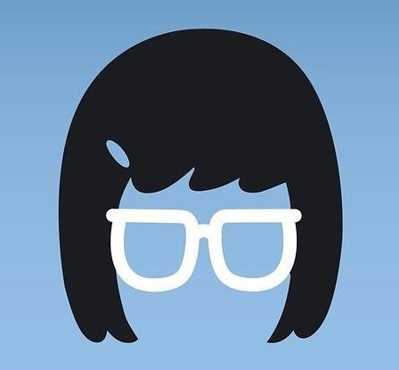
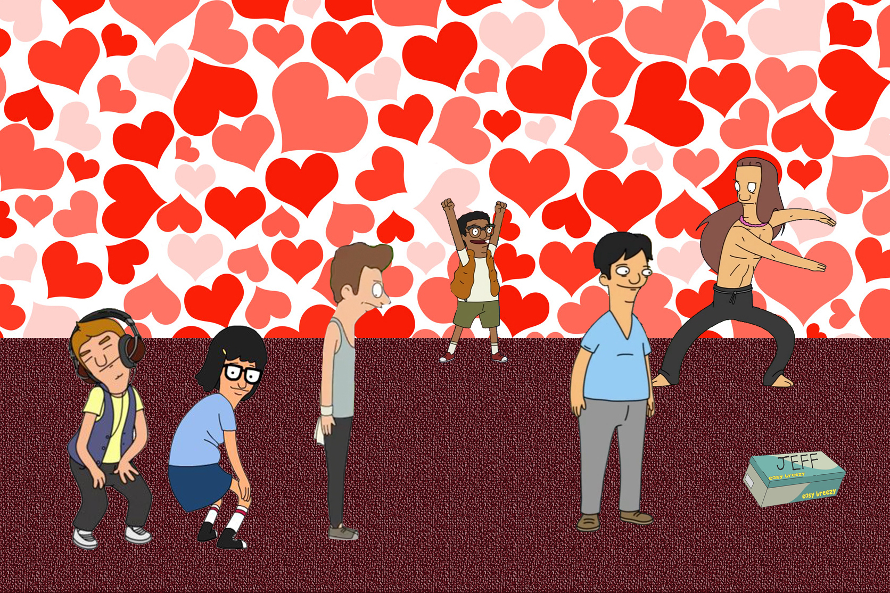
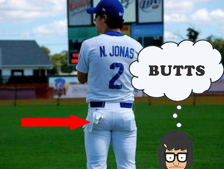
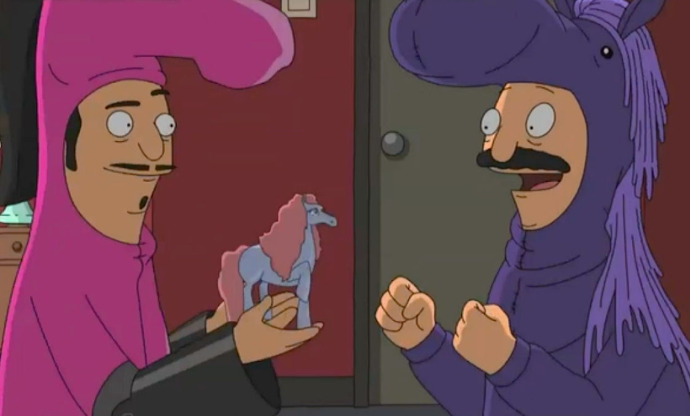

Tina's World
A Complex Woman
It's not easy being Tina (That's me). She's a girl with hopes, dreams, desires, and many interests. Below are just a few of the things that makes Tina, Tina (Again, AKA me).
- Boys
- Butts
- Zombies
- Horses
- Family
- Being Tina
Whoa, how is it possible that all that stuff can be bundled up into one fun-loving package like me? Tina will explain.
Boys
In my 13 years of life, I have developed many love interests. Sometimes they even like me back.
Here's just a few. I didn't photoshop this. Okay I lied! I did photoshop this! But I love them. Unfortunately I couldn't find pictures of everyone though. In order from most bootylicious to least they go:
- Jimmy Pesto Junior
- Josh the dancer
- Dr. Yap the dentist
- Jonas the delivery boy
- Torpedo's entire baseball team
- Jeff the ghost
- Jordan who does graffiti
To say I love them equally would be a lie. I always crawl back to Jimmy Junior and his butt. Just when I think I'm out, his cheeks pull me right back in.
Butts
Everyone has a butt, some are better than others. It's what we do with our butts that counts. Instead of using them for evil, we should grab everbody's butts for world peace. That's what I always say anyway.Here is me with the greatest butt of all time: A baseball butt. 
Zombies
Zombies are complex, like me. That's why I like them so much. Are they dead, are they alive? It's all very confusing.
We relate on a social level too. Have you ever tried to talk to a zombie? They don't communicate or emote well. There's a lot of moaning involved. For some reason, that makes me incredibly comfortable.

Because of that, I know exactly what they want. It's usually to make out. People aren't like that. I don't understand if I should kiss people, or hug them. Do you want me to touch your butt? I have no idea! Treat me like a zombie to make me feel comfortable.
Horses
Although I'm a women now, I still make time for my horses. People will call it childish, but they don't understand that there's an entire group of old guys that like horses too called the Equesticles.
One time, an Equesticle named Bronconius stole Chariot, my favorite Pony doll. My dad was brave and decided to dress up like an Equesticle and infiltrate their group to get it back. It cost him his butt. Just kidding, but it was close. They tattooed him right above his butt which is almost the same thing
Ever since then, I decided I'll never be too old for horses thanks to Bob, who is my dad.
Family
I love my family. Sometimes bad Tina comes out, and it's hard for me to show it, but I will always love them. I'm thankful that my dad let's me fry burgers in the restaurant we own below our apartment. We get to spend lots of father daughter time together. I call it "Tina time." My mom is nice too. We both wear glasses, so you could say our relationship is on another level.
Gene and Louise (my brother and sister) are pretty cool too. They help me when my parents aren't around like at school.
Like one time, someone was pooping on the ground around school. My mom called him the "Buttler," others know him as the mystery pooper. Anyways, the school news didn't want to cover it, so I did. Angry that I was on to something, the school news told everyone that I did it. Louise and Gene helped me get air time and solve the mystery to clear my name.

The only poop is this family is in the toilet, where it should be.
Being Tina
Weird, how can Tina have an interest in being Tina? Tina will tell you. Sometimes I give into peer pressure, but I always regret it and come back to who I am: Tina.
Once I gave into peer pressure when everyone starting shaving my legs. I thought I needed to too, so I made my dad wax his legs before I did. But then I realized, I didn't want to get rid of my little hair friends. They are a part of who I am, so I didn't wax or shave them off!
I think everyone should think this way. Have self-confidence, appreciate who you are. Make mistakes, steal your mom's margarita mix, as long as you put it back where it belongs. Put your heart back where it belongs. In you.